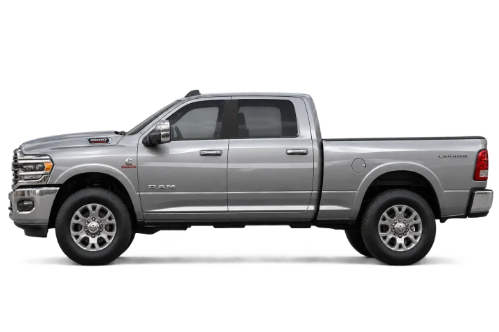
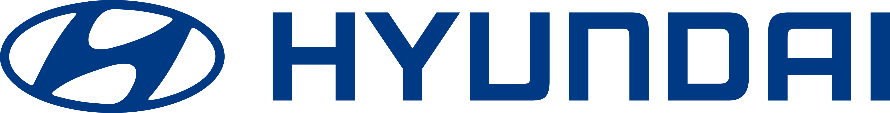

ISO 9001:2015
ISO 9001:2015Qualidade que se constrói em cada etapa.
A Hi-Tech informa a certificação ISO 9001:2015 para seu sistema de gestão da qualidade. Organização dos processos e melhoria contínua fazem parte desse compromisso.

Conheça as certificações e homologações apresentadas pela Hi-Tech e entenda como consultar as condições para seu veículo.
Conheça os programas que incluem a Hi-Tech e os benefícios previstos por cada montadora. A elegibilidade depende do modelo, da versão e da avaliação do veículo.
A Hi-Tech é certificada pela Jeep para realizar a blindagem de seus veículos. O processo respeita a engenharia, a robustez e as características originais que fazem parte da identidade da marca.
Para integrar o programa, a Hi-Tech passou por uma avaliação com 43 critérios técnicos definidos pela engenharia da Stellantis. Veículos novos e usados estão sujeitos à avaliação e às regras de elegibilidade.
Conhecer o programa Jeep ↗ Compass
Compass Commander
CommanderA Hi-Tech é a blindadora exclusiva e certificada pela CAOA Chery. Uma parceria construída ao longo de anos com o grupo CAOA, com reconhecimento da capacidade técnica e do cuidado em cada projeto.
Estrutura industrial, materiais de procedência e controle de qualidade se unem para preservar os componentes, o acabamento e as características de cada veículo.
A Hi-Tech é parceira certificada GWM para blindar veículos que reúnem eletrificação, conectividade e assistência à condução. Cada projeto considera o peso adicional, os sistemas eletrônicos, os sensores, as baterias e a estrutura original.
As soluções de blindagem tradicional e Tensylon permitem diferentes configurações de materiais, conforme o projeto do veículo.
Conhecer o programa GWM ↗ Haval H6
Haval H6Consulte a elegibilidade da versão e do ano.
Eletrificação, tecnologia e engenharia avançada exigem atenção especializada em cada intervenção. A Hi-Tech realiza um processo homologado, com materiais de alto desempenho e cuidado com a arquitetura original do veículo.
O projeto considera a tecnologia embarcada e as particularidades de cada automóvel para incorporar a proteção com precisão.
Potência, capacidade e sofisticação fazem parte do projeto de uma RAM. A Hi-Tech reúne experiência, estrutura e conhecimento técnico para incorporar a proteção com respeito às características originais de cada picape.
O processo homologado utiliza materiais de alto desempenho. Veículos novos e usados estão sujeitos à avaliação técnica e às condições de elegibilidade do programa.
Conhecer o programa RAM ↗ Rampage
Rampage 1500
1500
2500 3500
3500Design, tecnologia e sofisticação pedem uma blindagem que acompanhe o padrão do veículo. A Hi-Tech oferece um processo homologado com materiais de alto desempenho, experiência técnica e atenção aos detalhes.
A engenharia, os sistemas e as características originais são considerados em cada etapa do projeto.
Da picape ao SUV, robustez, desempenho e engenharia fazem parte da identidade Ford. Preservar essas características é uma prioridade durante a blindagem.
A Hi-Tech realiza um processo homologado, combinando experiência, materiais de qualidade e rigor técnico para proteger o veículo com o cuidado que seu projeto exige.

HyundaiBlindagem homologadaConforto, tecnologia e segurança acompanham a rotina de quem escolhe um Hyundai. Na Hi-Tech, cada projeto recebe atenção técnica para incorporar a blindagem e preservar as características originais do veículo.
Materiais de qualidade e um processo homologado orientam a execução do serviço, com cuidado em todas as etapas.
A engenharia 4x4 e a tradição no rally fazem parte da trajetória Mitsubishi. Incorporar a blindagem exige experiência para respeitar a robustez, o desempenho e os detalhes do projeto original.
A Hi-Tech oferece um processo homologado, com materiais de alto desempenho e rigor em todas as etapas.
Consulte os projetos disponíveis, os documentos e as condições específicas para o seu veículo.
A homologação da montadora se refere ao projeto do veículo. A certificação de gestão e a participação em uma associação têm papéis próprios.
ISO 9001:2015A Hi-Tech informa a certificação ISO 9001:2015 para seu sistema de gestão da qualidade. Organização dos processos e melhoria contínua fazem parte desse compromisso.
 ABRABLIN
ABRABLINA Associação Brasileira de Blindagem lista a Hi-Tech como associada desde 2006. A participação na entidade é distinta da certificação de gestão e da homologação de veículos.
Consultar a associação ↗Solicite os certificados, seus escopos e as condições de garantia antes da contratação.
Antes de contratar, conheça o que cada garantia contempla e as condições para manter seu blindado bem cuidado.
Confira a elegibilidade do modelo e as condições para preservar a garantia da montadora.
Garantia de fábricaConheça os fabricantes, os materiais instalados e os prazos de cobertura de cada componente.
Materiais da blindagemVerifique o vidro escolhido, o prazo e as condições de cobertura contra delaminação.
Vidros balísticosEntenda a garantia da instalação, os cuidados de uso e o plano de revisões após a entrega.
Serviço e revisões